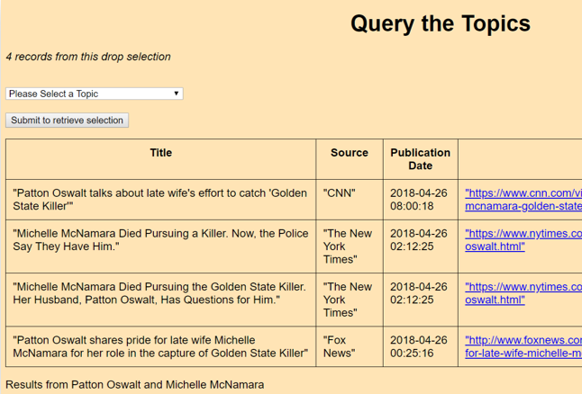

Web-based News App

×

As part of a team, I helped develop a web-based app presenting a range of articles on different topics from different news sources, drawn from across the political spectrum (from Breitbart News to The New York Times).

The app was powered by News API (a RESTful API) to access the daily news. A MySQL database was used to store the articles, and article comparisons were coded in Java. The website was built with PHP (and some very simple HTML/CSS).
See more on GitHub